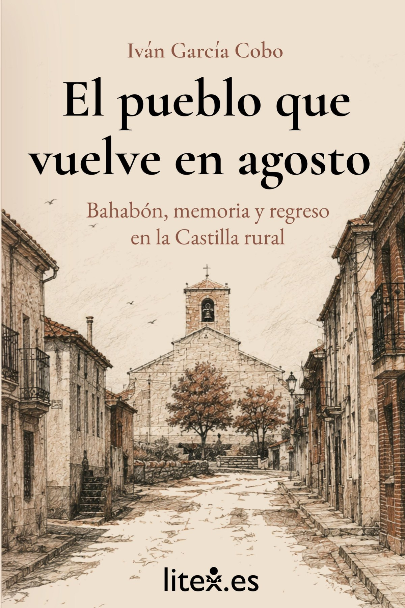
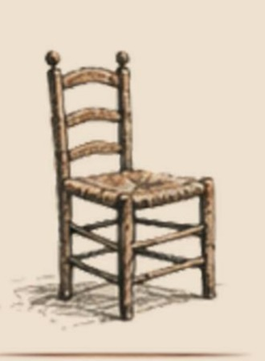

Publicación · 14 de agosto de 2026
El pueblo que vuelve en agosto
Bahabón, memoria y regreso en la Castilla rural
Durante casi todo el año, el pueblo vive en silencio. En agosto vuelven los nombres, los pasos y las voces. Este libro cuenta ese regreso.
Disponible el 14 de agosto de 2026

Contracubierta
De qué trata
Hay pueblos que, durante la mayor parte del año, viven en silencio.
Casas cerradas, calles vacías, puertas que esperan.
Pero en agosto todo cambia.
Vuelven los nombres, los pasos, las voces, los recuerdos que se repiten y las historias que solo tienen sentido aquí.
Este libro es un viaje por Bahabón: su gente, sus costumbres, sus fiestas, sus ausencias y sus regresos.
Un homenaje a todos los pueblos pequeños de Castilla que, a pesar del tiempo, siguen aquí.
Primeras páginas
Cómo empieza
Hay un cierto punto del camino en el que ya sabes que estás llegando, aunque todavía no veas el pueblo. No es un cartel. No es un número de kilómetro. Es algo del paisaje: una manera que tiene la tierra de abrirse, un giro de la carretera que el cuerpo recuerda antes que la cabeza. Aflojas el pie sin haberlo decidido.
Volver a un pueblo pequeño no se parece a llegar a ninguna otra parte. A una ciudad se llega; a un pueblo se vuelve. Aunque sea la primera vez que pisas sus calles, se vuelve, porque el pueblo trae detrás a toda la gente que lo caminó antes: los abuelos, los padres, los que ya no están, los nombres que se repiten en las conversaciones de agosto. No entras en Bahabón solo. Entras con todos ellos.

Índice
El libro por dentro
Catorce capítulos y unos agradecimientos finales.
- Volver
- El pueblo en invierno
- Las casas cerradas
- Los que se fueron
- Los que se quedaron
- La casa familiar
- La iglesia y las campanas
- La escuela
- Los trabajos y la tierra
- Las fiestas de agosto
- Donde hubo pueblos
- El verano como patria
- Bahabón hoy
- Lo que todavía resiste
Agradecimientos
Edición
Ficha técnica
- Título
- El pueblo que vuelve en agosto
- Subtítulo
- Bahabón, memoria y regreso en la Castilla rural
- Autor
- Iván García Cobo
- Editorial
- litex.es
- Publicación
- Formato
- Tapa blanda. Cubierta en color
- Extensión
- 200 páginas
- Idioma
- Español
- ISBN
- 978-84-09-89462-8
Autor
Iván García Cobo
Iván García Cobo es el autor de El pueblo que vuelve en agosto.
Escribe desde el vínculo familiar con Bahabón, en el valle del Valcorba, provincia de Valladolid: el pueblo al que este libro vuelve una y otra vez.
Publica en litex.es, la entidad que impulsa el fomento de la creación literaria, la cultura y la tecnología puesta a su servicio.
Este es su libro sobre ese regreso: un retrato de un pueblo pequeño de Castilla contado desde dentro.
litex.es
Escríbenos
Consultas de prensa, librerías, actividades y colaboración. Leemos todo lo que llega.